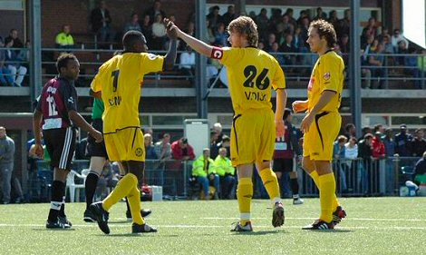
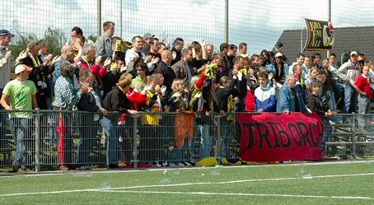

|
||
Roda was in de eerste ronde van de Amstel Cup te sterk voor de amateurs van SV Triborgh. Roda JC won vrij gemakkelijk met 0 - 5 op het kunstgras van de Tilburgse club. Doelpuntenmakers waren Edrissa Sonko 3 maal ( 39e, 45e en 81e minuut ), Sergio ( 86e minuut ) en Dirk Jan Derksen ( 89e minuut ).

De technische staf begon met de volgende elf
spelers; Kujovic, Voigt, Filipovic, Modou Kah, Sonko, Sergio, Koné, Bodnar,
Bodor, van den Ouweland en van Dijk.
 |
|
|